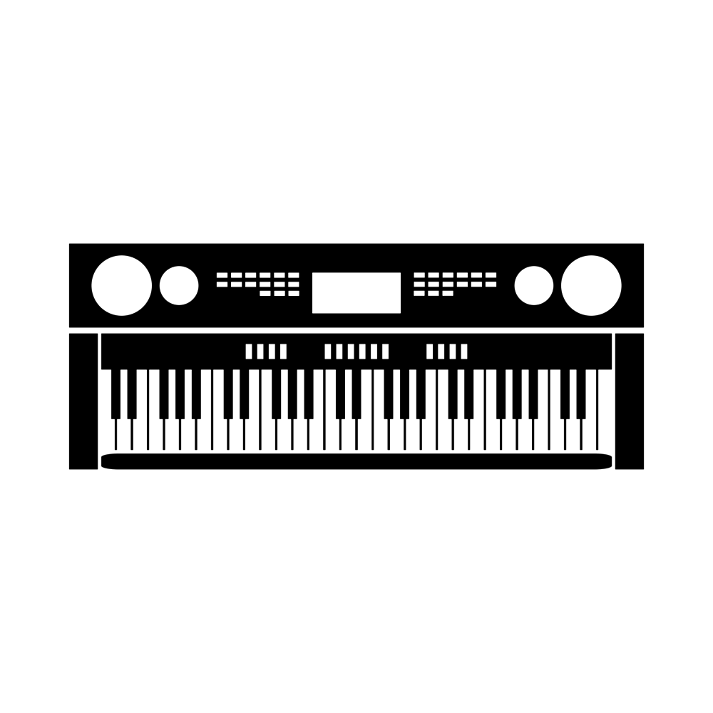

Hobbies
I would say I have an expert undertstanding of Virtual Reality Environment Usages.
Any world that is a representation of what someone wants to escape reality to; is one I want to learn about.

Skills

I think of it like an imaginary muscle that can still be trained and grow stronger, despite it being imaginary.